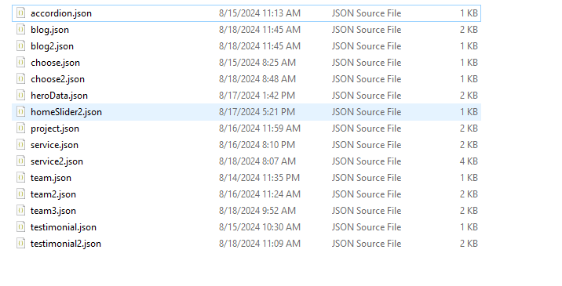

Setup Development Environment
In order to kickstart the development of your web app with Arkdin, the very first thing you need to do is to setup a nextjs development environment.
Following tools are needed to setup a nextjs dev environment:
- Node JS
NodeJS works as a node package manager behind the scene. It is recommended to download and install the latest version of Node JS from its official site http://nodejs.org/
Installation
To install Arkdin on your local matchin, download the files from Themeforest and unzip them to the local disk on your computer.
Inside the extracted folder you will see two folders named 'arkdin-documentation' and 'arkdin-nextjs'.
Open 'arkdin-nextjs' with a code editor like vscode. And follow
the
stapes below-
Open vscode terminal
Then run : npm install
Then run : npm run dev
Now in the browser go http://localhost:3000/
Production Build : npm run build
Open vscode terminal
Then run : yarn install
Then run : yarn run dev
Now in the browser go http://localhost:3000/
Production Build : yarn build
You can learn more in the Nextjs Documentation To learn Nextjs.
Folder Structures
- public - All static files
- assets/img - All images for this template
- assets/img/icon - All icon for this template
- src/app - Content all the NextJs file
- Components - All components with relevant Section
- Data - All data on that template
- Pages - All pages on that template
- Layout - 2 different layout on that template
- globals.css - Main Css File
- page.js - Main Home Page of Next App
- Css File
- src/app/globals.css - Main Css File
- package.json - All packages have information
- node_modules - After install Arkdin you can see this folder, this folder content all installed package.
Pages and Components Info
- Home (/src/app/page.js)
- Home2 (/src/app/home2/page.jsx)
- About(/src/app/about/page.jsx)
- Blog(/src/app/blog/page.jsx)
- Blog Details(/src/app/blog/blog-details/page.jsx)
- Contact(/src/app/contact/page.jsx)
- Project(/src/app/project/page.jsx)
- Project Details(/src/app/project/project-details/page.jsx)
- Service(/src/app/service/page.jsx)
- Service Details(/src/app/service/service-details/page.jsx)
- Team(/src/app/team/page.jsx)
- Team Details(/src/app/team/team-details/page.jsx)
Common Components:
- Header (/src/app/Components/Header)
- Footer (/src/app/Components/Footer)
Template Features:
- next 14.2.7+
- ES6+
Template Data
The data of this application is basically given src/app/Data Folder. If you go to the page folder and open any page, you can see Component.
Dependencies
Here are the dependencies list which being used in the Arkdin React Template:
"dependencies": {
"bootstrap": "^5.3.3",
"html-react-parser": "^5.1.15",
"next": "14.2.7",
"react": "^18",
"react-bootstrap": "^2.10.4",
"react-dom": "^18",
"react-slick": "^0.30.2",
"slick-carousel": "^1.8.1"
},
Fonts
By default, the template loads Outfit , DM Sans font from Google Web Font Services, you can change the font with the one that suits you best.
You will find the font code in the "src/app/layout.js"
Deploy
For deploy first run the command npm run build or yarn build
Now you will get build folder.
Using an FTP Client (such as Filezilla or Total Commander), you will need to upload all of the contents of the
'build' folder to your server.
Credits
Freepick
Unsplash
Packages
bootstrap
html-react-parser
next
react
react-dom
react-slick
slick-carousel
Support
If you have any questions, please use our profile contact form on
Envato (
https://themeforest.net/user/themeservices
) Or direct email us on nayon.storerepublic@gmail.com.
We aim to answer all questions within 5 days . In
some cases the waiting time can be extended to
7 days.